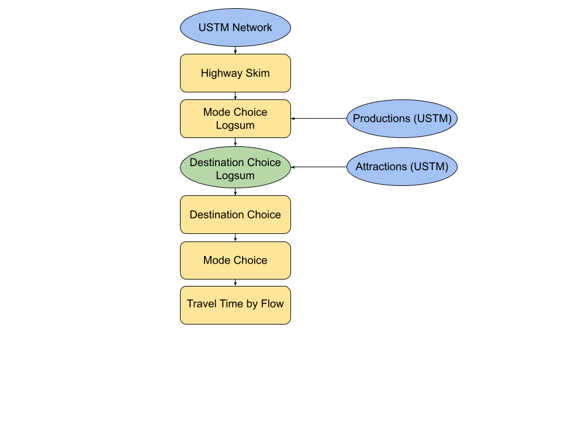

3 Methodology
This chapter presents the design and implementation of a model system designed to measure accessibility changes on a transportation network after the elimination or loss of highway links. The chapter begins with a discussion of the Utah Statewide Travel Model (USTM) and why it is not entirely suitable for this study. We then present a proposed model design and implementation within the CUBE travel demand modeling software. The chapter ends with a discussion of model calibration and validation.
3.1 Utah Statewide Travel Model
The Utah Statewide Travel Demand Model (USTM) is developed and maintained by the Travel Demand Modeling group at UDOT. Within Utah, there are five travel demand models developed for urban centers under the purview of a Metropolitan Planning Organization (MPO). USTM covers the rural and other areas lying outside of the MPO model regions, where UDOT is responsible for transportation planning. Consequently, USTM covers the entire state, and incorporates MPO models developed by the Wasatch Front Regional Council (WFRC), Mountainland Association of Governments (MAG), Cache Metropolitan Planning Organization (CMPO), and the Dixie Metropolitan Planning Organization (DMPO). Additionally, the Summit/Wasatch Travel Demand Model is incorporated into USTM (Utah Department of Transportation 2021)
The local travel demand models and USTM use a gravity-based trip distribution model. The gravity model assumes that trips between origin-destination (OD) pairs are proportional to total productions \(P\) and attractions \(A\). That is, all productions will be attracted to a location based on the size of a location (a locations attractiveness) and the friction factor between the OD pair. A mathematical representation of the gravity model is given by:
\[\begin{equation} T_ij= P_i*(A_j F_{ij}/\sum A_j F_{ij}) \tag{3.1} \end{equation}\]
Where:
- \(T_{ij}\) represents trips made between an origin i and a destination \(j\)
- \(P_i\) represents productions at origin \(i\)
- \(A_j\) represents attractions at destination \(j\)
- \(F_{ij}\) is the friction factor between an OD pair
The friction factor (also known as the impedance, or resistance) between two zones can be represented in a number of ways, such as with a negative exponential function:
\[\begin{equation} F_{ij}= αexp(-β d_{ij)} \tag{3.2} \end{equation}\]
Where \(d_{ij}\) is the distance or cost between zones \(i\) and \(j\) and \(α,β\) are calibrated parameters. In the gravity model, as the distance between an OD pair increases, users become less likely to make trips between that OD pair. Destinations are fixed, and trips calculated using the gravity model must have a proportional number of users assigned to each destination based on its size or level of attraction.
A primary weakness of gravity-based distribution models is their inability to consider multi-modal impedances or other attributes of a destination rather than their size (as represented by \(A_j\) in Equation (3.1)). The friction factor in Equation (3.2) asks an implicit question with its distance or cost variable \(d\): which mode is used for the trip? In almost all cases, automobile distances are asserted as the only option, but if a destination happens to be close by rail and far by highway, the destination choice model will not incorporate this.
Alternatively to four-step models, logit-based destination choice models improve model accuracy when compared with gravity and four-step models, and are advantageous because of an increased ability to introduce additional variables and reflect other statistical assumptions (Travel Forecasting Resource 2021). The ability to incorporate improved methods for determining trip distribution, mode choice, and destination choice all allow logit-based models to more accurately estimate trips between OD pairs on a road network. Consequently, logit-based travel demand model can estimate the choice-based effects of major changes to a road network given adverse natural or man-made events. More accuracy in a model’s estimation process provides a more precise estimate than could otherwise be made using another type of model.
Destination choice models, on the other hand, explicitly consider multimodal accessibility. The ability to consider multimodal accessibility allows a user to choose the location of their destination based on a variety of factors including mode accessibility and other socioeconomic data, which are made available through the Utah Household Travel Survey (UHTS) conducted in 2017 (uhts2017?). The socioeconomic data primarily comprises the size term of the destination choice. The DC size term is a measure of the appeal or attractiveness of a destination when compared to another destination. The DC size term is discussed in further detail later on in this paper.
A critical feature of logit-based choice models – described previously – is that they are more versatile than traditional modeling methods, with the ability to allow different types of data to be used for analysis which is highly important for a model that is constrained. Additionally, logit-based choice models are better able to measure the changes in accessibility of a destination due to network changes or disruption than other models. As such, logit-based models are typically used in new or more advanced travel models.
Such logit-based destination choice models are becoming common in four-step and more advanced travel models. However, logit-based destination choice models have not been implemented within the MPO models in Utah or within USTM except for some home-based work trips in the WFRC/MAG model. As a result, USTM and other travel models within Utah are not useful for the accessibility analysis proposed for this research, and a new model must be developed.
3.1.1 Model Framework
An initial model framework developed in 3.1 was created to show how a resiliency model would appear in order to create a logit-based model. The main inputs of the model are all extracted from USTM. The three main inputs to the framework are:
- Highway Network: The USTM model network, which was obtained from UDOT and forms the basis of the model.
- Productions: Zonal trip productions from the USTM model, classified as household productions.
- Attractions: Zonal trip attractions from the USTM model, classified as socioeconomic data.
The model framework consists of the following steps (also visually represented in 3.1):
Skim Network - In this step, the model determines the shortest path by travel time on the USTM network between each origin and destination. The model also determines the corresponding distance.
Mode Choice Logsum
- The mode choice logsum is a function of the travel impedances estimated in the highway and peak transit skims and serves as an accessibility term in the destination choice model.
- The mode choice logsum uses utility functions to determine the probability and logsum associated with travel between each original and destination.
- The mode choice model uses constants and coefficients to calibrate and adjust the utility equations and determine the mode choice probabilities.
- Destination Choice (DC) Logsum
- The destination choice logsum is a function of the travel impedances (represented by the mode choice logsum) and the attraction size term of each destination zone. This is the key evaluation metric of the model.
- The attraction size term is determined using socioeconomic data for each destination zone.
- Destination Choice
- Allocates trip productions to destination zones based on information from the destination choice logsum.
- Mode Choice
- Allocates trip productions attracted to each zone to specific modes based on the mode choice logsum.
- Travel Time by Flow
- A new measure of travel time on the network after disruption used similarly to traditional network loading to measure effects of network disruption.

Figure 3.1: Model framework.
3.2 Highway and Transit Skims
The model requires an understanding of the distance between zones by multiple modes, and how these distances change when a link in the network is damaged or destroyed. To measure the automobile, transit, and non-motorized trip times, initial data was needed for each trip mode considered in the model.
The USTM highway network was extracted and applied to the resiliency model. The highway network is made up of both the urban and rural highway networks for the whole state of Utah. The highway network contains many link- and node-attribute data including street name, link distance, number of lanes, functional classification, transportation analysis zone ID (TAZ ID), county name, as well as speed limits and travel time data for five different times of day. Of particular interest from the available information was the \(AM_TIME\) which contains the travel time in minutes for the AM time period along a link and the \(DISTANCE\), which contained the distance between nodes along a link. The \(AM_TIME\) is used to determine the travel time between an origin and destination. The \(DISTANCE\) is used to measure the distance between the OD pair with the shortest AM travel time.
The highway skim module creates an output matrix of travel times and distances between origin-destination (OD) pairs and must be created before automobile and non-motorized (NMOT) trips can be incorporated into the model. We used the \(AM_TIME\) and \(DISTANCE\) variables available in the highway network file to create a matrix of distances and shortest travel times between all OD pairs in the USTM network. The output matrix, or highway skim, forms the basis for further analysis by providing needed automobile and non-motorized (NMOT) information for the other modules in the model.
USTM incorporates traffic models maintained by other MPOs in Utah into the model structure. Only the WFRC / MAG model contains a substantive transit forecasting component. To account for transit trips in the resiliency model, an offline process adapted the WFRC transit skims into the USTM model zone structure. The end result of this process is that the TAZ matrices from each model were adjusted such that the WFRC / MAG model was the same size as the USTM model, and each TAZ number corresponded between the models as well.
Transit network resiliency is outside the scope of this project. Accordingly, the resiliency model assumes that transit services are fixed, meaning that changes to the network cannot influence transit availability on the network.
3.3 Trip Attractions and Socioeconomic Data
The resiliency model uses socioeconomic data extracted from USTM to estimate the productions at each zone. The socioeconomic data from the Utah Household Travel Survey (UHTS) conducted in 2015 contains TAZ related information such as county name, total households, household population, total employment, and a breakdown of employment by job category (uhts2017?). This information is useful when determining the DC size term.
Trip attractions are calculated using the size term, which denotes the significance of a TAZ in attracting trips. The size term is built using various DC parameters and the socioeconomic data to determine the size or attractiveness of a zone. The size term equation was adapted from the Oregon Statewide Integration Model (SWIM), which is one of the most comprehensive destination choice models today.
tar_load(coefficient_table)
kbl(coefficient_table, caption = "Choice Model Coefficients", booktabs = TRUE,
col.names = c("Model", "Variable", "HBW", "HBO", "NHB"), digits = 4) %>%
kable_styling() %>%
collapse_rows(1:2, row_group_label_position = 'stack', latex_hline = "major")| Model | Variable | HBW | HBO | NHB |
|---|---|---|---|---|
| Destination Choice | Households | 0.0000 | 1.0187 | 0.2077 |
| Destination Choice | Office Employment | 0.4568 | 0.4032 | 0.2816 |
| Destination Choice | Other Employment | 1.6827 | 0.4032 | 0.2816 |
| Destination Choice | Retail Employment | 0.6087 | 3.8138 | 5.1186 |
| Destination Choice | Distance | -0.0801 | -0.1728 | -0.1157 |
| Destination Choice | Distance^2 | 0.0026 | 0.0034 | 0.0035 |
| Destination Choice | Distance^3 | 0.0000 | 0.0000 | 0.0000 |
| Mode Choice | Shared | -1.1703 | 0.0164 | -0.0336 |
| Mode Choice | Transit | -0.3903 | -1.9811 | -2.2714 |
| Mode Choice | Non-Motorized | -1.2258 | -0.3834 | -0.8655 |
| Mode Choice | Travel Time [minutes] | -0.0450 | -0.0350 | -0.0400 |
| Mode Choice | Travel Cost [dollars] | -0.0016 | -0.0016 | -0.0016 |
| Mode Choice | Walk Distance (less than 1 mile) [miles] | -0.0900 | -0.0700 | -0.0800 |
| Mode Choice | Walk Distance (1 mile or more) [miles] | -0.1350 | -0.1050 | -0.1200 |
3.4 Mode Choice Model
The mode choice (MC) module calculates the mode choice logsum (MCLS) between each OD pair in the network for each trip purpose. The trip purposes considered in the model are home-based work (HBW), home-based other (HBO) and non-home-based (NHB). The MC module includes the highway skim, the transit skim, and the MC coefficients and MC constants as inputs.
The MC constants and coefficients used in the resiliency model were extracted from USTM where applicable or adapted from SWIM. The IVTT, COST, WALK1, and WALK2 coefficients for the HBW, HBO, and NHB purposes were extracted directly from the USTM mode choice model. The values for each of the coefficients are in Table ??:
Utility equations, which were initially adapted from the RVTPO model, account for multiple variables which typically have different units. Each of the variables included in the utility equation must have the same unit, so the coefficients in Table ?? are made up of both generic and alternative-specific numbers. A generic coefficient is applied to a variable that changes by mode. In Table ??, the only generic coefficient is the COST coefficient. The other MC coefficients in the resiliency model are alternative specific. These coefficients are the IVTT, WALK1, and WALK2 coefficients. The value that each of these coefficients are multiplied by changes for each of the available modes. The alternative specific coefficients included in the MC model allow the model to measure user bias.
Another aspect to utility equations are mode constants. We initially extracted the MC constants from USTM, however these values were adjusted during the calibration process. Constants are typically values that represent the effects of all factors on the choice, but are not limited to those values included in the utility equations (Koppelman and Bhat 2006).
The utility equations from the Roanoke Valley Transportation Organization model (rvtpo?) were extracted and then pared down to match the available data from USTM and the purposes included in the resiliency model. The constant values, which are represented using a “K” change during the calibration process while the coefficients do not change during the calibration process.
\[\begin{equation} U_{Auto}=C_{IVTT} * Travel Time + C_{Cost} * Autocost * Distance \tag{3.3} \end{equation}\]
\[\begin{equation} U_{Transit}=K_{TRN} + C_{IVTT} * Transit Time \tag{3.4} \end{equation}\]
\[\begin{equation} U_{NMO}T=K_{NMOT} + 20 * C_{WALK1} * Dist_{<1 Mile} + C_{WALK2} * Dist_{>1Mile} \tag{3.5} \end{equation}\]
From the equations above, several commonalities between the three MC utility equations are apparent. First, the transit and NMOT utility equations both have a constant, denoted by a \(K\), included. The auto equation does not have a constant because auto serves as the reference variable in the resiliency model. Second, both the auto and NMOT equations account for distance, and last, each of the three utility equations account for travel time, either in the form of an in-vehicle travel time coefficient, or another modified factor. The NMOT utility equation is not calculated using a specific coefficient for time. Instead, the NMOT distances are multiplied by an assumed walking speed of 20 minutes per mile. This is common practice in other choice models for NMOT trips.
Additionally, in the utility equations for NMOT trips, the maximum travel distance was limited to a trip of 50 miles or less. 50 miles was assumed as a maximum distance for a NMOT trip between an OD pair. We determined that the longest allowable distance a biker may choose to travel would be about 50 miles one-way. An attempt was made to limit the distance cap further; however, it was discovered that the NMOT distance becomes more sensitive at shorter distances. Limiting the NMOT trips will be explored further in Phase 2 of model development.
After the MC utilities were calculated, it was necessary to calculate the probability associated with each mode of travel for an OD pair. The equation used to accomplish this can be seen in the equation below:
\[\begin{equation} Probability_{i} = \frac{exp_{i}}{\sum exp(U)} \tag{3.6} \end{equation}\]
Due to the way that the transit utility was calculated, the probability that a user would choose transit in an area with no available transit was often 100%. The cause of this was that the transit time matrix only shows a time value if there is transit available between an OD pair. The zero values that corresponded to areas with no transit availability caused the transit utility to be very small, or less negative in most cases compared to all the other modes considered. As a result, users had a greater probability of choosing transit as a mode even if it was not an available option between an OD pair. To troubleshoot this, we filtered the sum of the exponentiated utilities and reassigned values equal to zero to be equal to 1, so that the total sum of the exponentiated utilities for an OD pair would be 1. After implementing this change, the calculated probabilities added up correctly between modes, and areas with no transit service available returned a transit probability of zero.
3.5 Destination Choice Model
The destination choice (DC) module calculates the destination choice logsum (DCLS) between each OD pair in the network for each trip purpose. The trip purposes considered in the model are home-based work (HBW), home-based other (HBO) and non-home-based (NHB). Two other trip purposes are considered in USTM, though these purposes do not have significant effect on the logsum or are not flexible in nature (users cannot choose a different destination or origin). The DC module includes the highway skim, MCLS output from the previous module, the socioeconomic data extracted from USTM, and DC parameters as inputs.
The DC parameters were adapted where applicable from SWIM, the Oregon Statewide Integrated Model. SWIM has many more purposes and modes incorporated into its model structure than does the resiliency model. One limitation to using SWIM as a basis for the DC parameters, however, is that SWIM does not account for work trips. Oregon uses a separate travel demand model to estimate work trips, which was problematic because the DC parameters for work purposes could not be located. Thus, the work trip parameters were taken from the RVTPO model instead. The DC parameters can be seen in Table ??
The DC utility equation was initially adapted from the RVTPO model, and then pared down to match the available data inputs from USTM and purposes of the resiliency model. The DC utility equation differs from the MC utility equations. The DC equation, seen in Equation (3.7), is made up of the MCLS calculated in the previous module, the size term, and several distance and cubic polynomial coefficients and their corresponding values.
\[\begin{equation} U=C_{LSUM} * MCLS + log(sizeterm) + C_{Dist} * Dist +C_{Distsquared} * DistSquared + C_{DistCubed} * DistCubed + C_{LogDist} * log(Dist) \tag{3.7} \end{equation}\]
The MCLS value is applied to the DC model utility equation as the impedance term, or a measure of a user’s resistance to using the specified path or mode. This is like the friction factor in the gravity model discussed in the beginning of methodology. Feeding the MCLS value into the DC module is what allows users to choose a destination rather than having fixed destination choices. The size term, which will be discussed in greater detail later in this chapter helps to determine the attractiveness of a destination zone compared to another destination. The cubic polynomial terms serve as a method to calibrate the DC module outputs and will also be discussed in greater detail later in this chapter. These are the main terms that make up the DC utility equation.
The socioeconomic data is used in the DC model to compute the size term, or the attractiveness of a destination choice in the model. The size term is made up of statistical data about a zone. This data was published in 2015 as part of the UHTS and made available via UDOT. The size term equation can be seen below:
\[\begin{equation} SizeTerm= C_{HH} * TotHH + C_{OFFI} * OFFI + C_{RETEMP} * RETEMP + C_{OTHEMP} * (ALLEMP-OFFI-RETEMP) \tag{3.8} \end{equation}\]
Other employment was not included in the socioeconomic data, which was problematic. A way to determine a value for other employment was found by subtracting the other employment purposes considered from the ALLEMP value. Doing this left only the employment data that had not already been accounted for in each TAZ behind to be multiplied by the proper coefficient as seen in Table ??.
The DC logsums are calculated by summing each row in the DC utility matrix, and then exponentiating that value. This process used to accomplish this can be seen below:
\[\begin{equation} DCLS=exp(ROWSUM(U_{DC})) \tag{3.9} \end{equation}\]
The purpose of taking the log of the entire row is to measure the logsum between a zone and all the other zones at the same time. By doing this, we can determine the overall change in logsum between scenarios by TAZ, which is the measurement of interest. The logsum tells us the value of a zone based on a user’s ability to choose a mode and destination.
The destination choice parameters and mode choice coefficients were calibrated according to standard procedure such that the trip length frequency distribution (TLFD) between USTM and the resiliency models were similar.
3.6 MAYBE INCLUDE TABLE WITH BEGINNING AND ENDING CALIBRATION VALUES?
3.7 Summary
We now have a logit-based model that is sensitive to user mode and destination choice. The model also accounts for modes that are not as flexible in the case of link closure as well. Using the model, we can input scenarios with broken links to evaluate the effects that link loss may have on user mode and destination choice, as well as estimate the overall disbenefit experienced by road users per day.